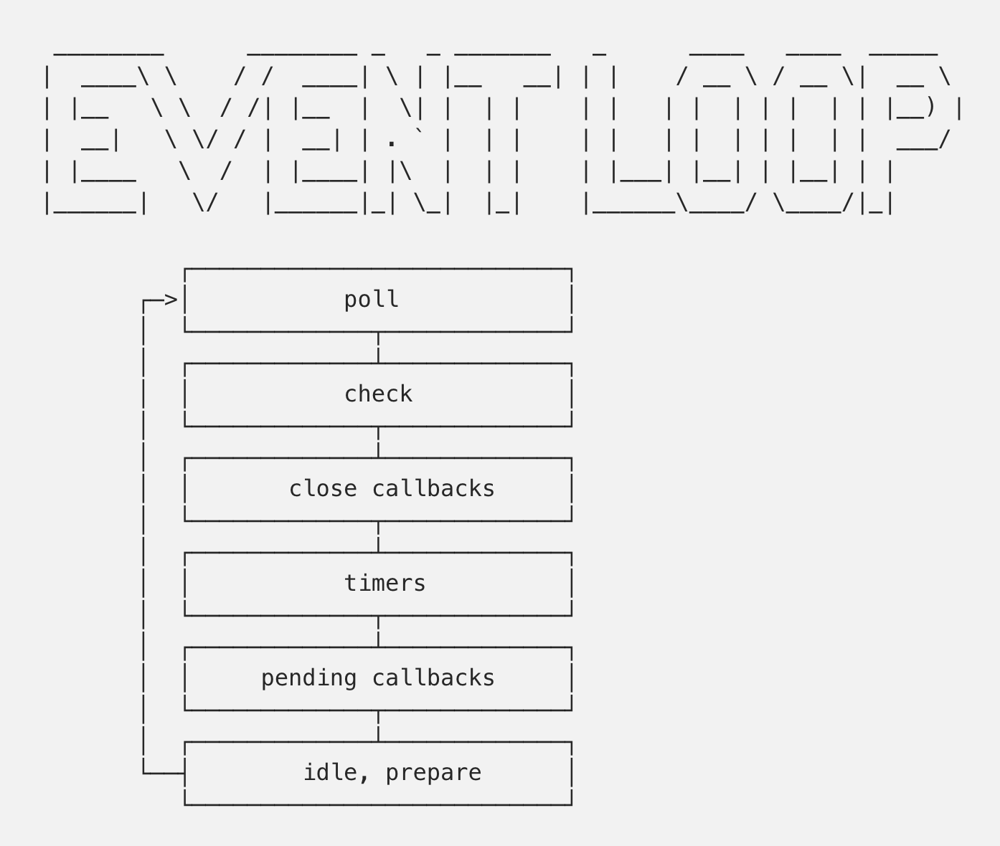
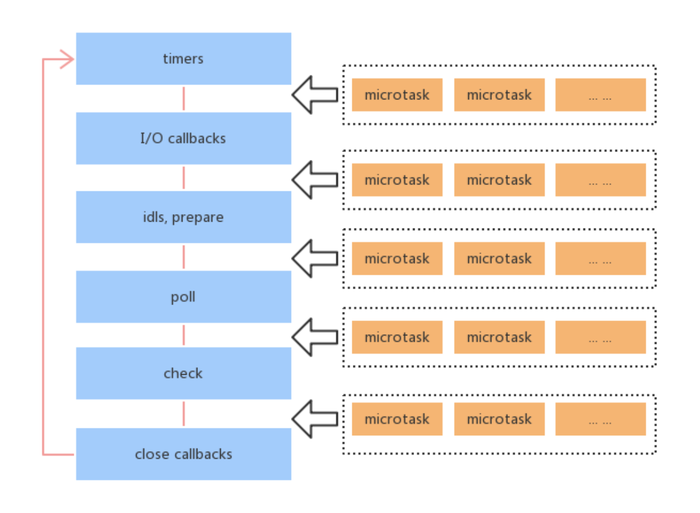

本文内容
本文主要记录一些 node 中关于事件循环机制的内容
参考：
- http://www.ayqy.net/blog/javascript-macrotask-vs-microtask/
- https://cnodejs.org/topic/57d68794cb6f605d360105bf
事件循环
- node 进程启动后，就开启了一个事件循环（单个线程）
- 事件循环包含有 6 个阶段：
- poll
- check
- close callbacks 结束阶段的回调，不是重点
- timers
- pending callbacks node 内部使用的阶段
- idle，prepare node 内部使用的阶段
- 每个阶段都是一个类似于 FIFO 的队列，队列中都是回调函数，当进入一个阶段时，会依次执行该阶段的回调函数，直到满足一定条件离开该阶段，跳转到其它阶段
- 事件循环执行过程就是根据一定规则不停的在以上这些阶段中跳转，当所有阶段的所有回调都执行完毕了，并且不需要再等待异步 IO 事件时，则退出事件循环，最终表现为：进程退出

进程启动
node 进程启动后，就会开始执行用户代码，同步执行完了用户代码后，就开始执行事件循环。
也就是说，当我们执行 node hello.js 时，hello.js 内容如下：
console.log('1');
console.log('2');
此时 node 的单线程的状态如下（伪代码）：
console.log('1');
console.log('2');
event_loop(timers_phase)
也就是说，进程启动后，先执行我们自己写的代码，然后立刻进入事件循环，运行在 timers 阶段
这些所有的运行过程，都是在单个线程中的
重点阶段
我们真正打交道较多的阶段，就是下面 3 个阶段，分别是 timers、poll、check
timers 阶段
本阶段执行被 setTimeout() 和 setInterval() 调度的回调函数。
执行的是那些超过了时间阈值的回调。例如，我们在进程启动后 500 毫秒时，进入了 timers 阶段，timers 队列中有 3 个定时器，设置的时间分别是 400 毫秒、500 毫秒、1000 毫秒。那么将会执行前两个定时器，执行完毕后，假设进程启动时间到了 700 毫秒，此时小于 1000 毫秒，第三个定时器就不会执行。
此时，本轮的 timers 阶段就结束了，于是事件循环就跳转到 poll 阶段。
注：定时器无法保证精确的执行时间，因为会受到操作系统的进程调度的影响，以及线程执行时可能阻塞在了其它的回调事件中，到了去处理定时器时，可能已经超过定时器的时间很久了
poll 阶段
在 node.js 里，任何异步方法（除 timer，close，setImmediate 之外）完成时，都会将其回调加到 poll 队列里，然后执行。
如果事件循环进入了 poll 阶段，将会发生下面情况：
如果 poll 队列不为空，事件循环将同步的执行这个 poll 队列里的回调，直至为空，或执行的回调数量到达系统上限
如果 poll 队列为空，将会发生下面情况：
如果代码已经被 setImmediate() 设定了回调（check 队列中有回调），事件循环将结束 poll 阶段进入 check 阶段，并执行 check阶段的回调队列（也就是说 check 队列里只有 setImmediate() 的回调）
如果代码没有设定 setImmediate() 回调（check 队列中没有回调），将会有以下情况：
timers 队列有到达了时间阈值的定时器（也就是已经可以触发的定时器）：跳转进入 timers 阶段
timers 队列没有可触发的定时器：事件循环阻塞在 poll 阶段，轮询 IO 事件，等待事件完成，然后将回调加入 poll 队列，然后立即执行该回调队列。（一次轮询可能返回多个事件）
- 这里有个小细节：poll 阶段的阻塞是有个超时时间的，那就是最早的 timer 定时器的到达时间
- 也就是说：poll 阶段发现当前没有定时器可以触发，但是 2 秒后会有一个定时器到达时间了，那么 poll 阶段就会阻塞 2 秒，确保 2 秒后要么有新事件发生了可以执行回调，要么跳转到定时器队列去执行触发了的定时器
poll 阶段阻塞的这种情况下，就是在等待异步方法完成，例如
fs.readFile(path[, options], callback)，当这个异步方法完成的时候（读完了数据后），将会由内核通知 node 进程，然后 node 进程就会将回调加入到 poll 队列，poll 阶段立即执行该回调。
check 阶段
check 阶段执行使用 setImmediate() 方法设置的回调。当我们使用 setImmediate(callback) 时，回调会被加入到 check 队列。
进入到 check 队列后，将会执行所有 check 队列的回调，然后进入 close callbacks 阶段（不是重点），接着进入 timers 阶段。
测试代码示例
例子1
const fs = require('fs');
var start = process.uptime();
fs.readFile(__filename, () => {
console.log('poll:' + process.uptime());
});
setTimeout(()=>{
console.log('timer:' + process.uptime());
},3);
// 阻塞 5 毫秒
while( process.uptime() - start < 0.005){
;
}
setImmediate(()=>{
console.log('check:' + process.uptime());
});
输出：
timer:0.049632078
check:0.057028269
poll:0.057422407
分析：
- 首先执行用户代码，添加定时器在 3 毫秒后，然后阻塞 5 毫秒，确保定时器达到触发条件了
- 使用 setImmediate() ，添加到 check 队列回调
- 这串代码执行完毕后，开始进入事件循环，此时 poll 暂时为空（IO 回调需要在 poll 阶段进行阻塞轮询才会被添加到 poll 队列）
- 事件循环首先进入 timers 阶段，发现时间已经到了 5 毫秒，3 毫秒的定时器就触发了，回调执行完后 timers 队列为空
- timers 阶段结束，进入 poll 阶段
- poll 阶段发现 poll 队列为空，并且 check 队列不为空，于是 poll 阶段结束，进入 check 阶段
- check 阶段执行所有回调
- check 队列为空，check 阶段结束，进入 poll 阶段
- poll 阶段发现 poll 队列为空、check 队列为空、timers 为空，并且还有没去轮询的事件
- poll 阶段进入无限时长的阻塞，直到 readFile 完成
- 将 readFile 的回调进行调用
注：回调发生在上述分析过程的 4、7、11 步骤
例子2
const fs = require('fs');
var start = process.uptime();
fs.readFile(__filename, () => {
// console.log('poll:' + process.uptime());
fs.readFile(__filename, () => {
console.log('poll:' + process.uptime());
});
setTimeout(()=>{
console.log('timer:' + process.uptime());
},3);
// 阻塞 500 毫秒
while( process.uptime() - start < 0.5){
;
}
setImmediate(()=>{
console.log('check:' + process.uptime());
});
});
输出：
check:0.548693043
timer:0.556296747
poll:0.55664583
分析：
- 首先执行用户代码，添加了一个读取文件的异步事件
- poll、check、timers 队列都是空的，因此无限时长阻塞在 poll 阶段等待读取事件完成
- 读取事件完成后，执行回调方法
- 回调方法中，再次进行异步读取操作，然后添加一个 3 毫秒后的定时器，阻塞 500 毫秒确保定时器决定达到了触发条件
- 添加一个回调到 check 队列
- 回调执行完毕，poll 队列为空，此时 check 队列不为空
- 因此 poll 阶段结束，跳转进入 check 阶段，执行 check 回调
- check 阶段结束，进入 timers 阶段
- 定时器触发，执行 timers 的回调
- timers 队列为空，结束 timers 阶段，进入 poll 阶段
- poll 队列为空，并且发现 check 和 timers 都为空，那么进入无限期阻塞等待读取事件完成
- 读取事件完成，执行 poll 阶段的回调，此时所有队列为空，并且没有需要等待的事件了，此时进程退出
注：回调发生在上述分析过程的 7、9、12 步骤
另外从分析中可以看出，无论我们在第一次的读取事件回调里阻塞多久，都会是 setImmediate 的回调先于定时器的回调执行。
在例子 1 中，定时器和 setImmediate 的执行顺序，则取决于主线程的执行时间，如果执行主线程代码结束时，定时器达到触发条件，则会先于 setImmediate 执行，否则定时器将会后执行。
例子3
首先，创建一个超大的文件
$ node -e 'console.log(Buffer.alloc(1024 * 1024 * 1000).toString())' > tmp.data
然后，代码如下：
const fs = require('fs');
var start = process.uptime();
fs.readFile('tmp.data', () => {
console.log('poll:' + process.uptime());
});
setTimeout(()=>{
console.log('timer:' + process.uptime());
},300);
setImmediate(()=>{
console.log('check:' + process.uptime());
});
输出：
check:0.121103182
timer:0.420729763
poll:1.148161409
分析：
- 主线程代码执行完，进入 timers 阶段，发现定时器事件没到
- 转而进入 poll 阶段，poll 队列为空，check 队列不为空，转而进入 check 阶段
- 于是 check 回调执行，进入 timers 阶段
- timers 定时器事件依然没到，进入 poll 阶段阻塞直到 300 毫秒（最早的定时器触发事件）
- 由于 readFile 需要接近 1 秒的时间（因为是个 1G 的大文件，所以读取很慢），于是在 300 毫秒时，poll 阶段没有等待到事件返回，从阻塞状态中回来后，跳转到 timers 阶段
- 执行 timers 的回调，进入 poll 阶段，此时进入 poll 的无限期阻塞状态
- 1 秒钟左右时，readFile 事件返回，执行 poll 回调，然后 node 进程结束退出
注：回调发生在上述 3、6、7 步骤
例子4
const fs = require('fs');
var start = process.uptime();
fs.readFile(__filename, () => {
console.log('poll:' + process.uptime());
});
setTimeout(()=>{
console.log('timer:' + process.uptime());
},300);
setImmediate(()=>{
console.log('check:' + process.uptime());
});
输出：
check:0.048520728
poll:0.058550448
timer:0.351791715
分析：
- 这个例子与 例子3 的唯一区别是，读取的是
__filename文件，也就是一个不到 1k 的小文件，readFile 调用很快就能返回事件 - 主线程代码执行完，进入 timers 阶段，发现定时器事件没到
- 转而进入 poll 阶段，poll 队列为空，check 队列不为空，转而进入 check 阶段
- 于是 check 回调执行，进入 timers 阶段
- timers 定时器事件依然没到，进入 poll 阶段阻塞直到 300 毫秒（最早的定时器触发事件）
- 由于 readFile 需要的时间少于 100 毫秒（因为是个小文件，所以读取很快），于是在阻塞 100 毫秒左右时，poll 阶段等待到事件返回，从阻塞状态中回来，将回调加入到 poll 队列，并且立即执行 poll 阶段的回调
- 执行完回调后 poll 队列为空，因此继续阻塞直到 300 毫秒左右的 timers 触发
- 执行 timers 回调，node 进程结束退出
注：回调发生在上述 4、6、8 步骤
microtask 和 macrotask
node 中事件循环除了前面的循环阶段外，其实每个阶段还有微任务。微任务是在每个循环阶段结束之后运行的，示例图如下：

microtask：
- process.nextTick
- Promise callback
- Object.observe 废弃的 API
- MutationObserver 用来监听 DOM 事件的一个 API，也是个基本不用的
macrotask：
- setTimeout
- setInterval
- setImmediate
- I/O
宏任务就是我们之前说的，事件循环的那几个队列里的任务。
例子：
const fs = require('fs');
fs.readFile(__filename, () => {
setTimeout(() => {
console.log('timer will be last: ' + process.uptime());
}, 0);
setImmediate(() => {
console.log('check: ' + process.uptime());
process.nextTick(() => {
console.log('nextTock after check: ' + process.uptime());
process.nextTick(() => {
console.log('nextTock after check: ' + process.uptime());
});
});
});
process.nextTick(() => {
console.log('nextTock before check: ' + process.uptime());
process.nextTick(() => {
console.log('nextTock before check: ' + process.uptime());
});
});
})
输出：
nextTock before check: 0.04490284
nextTock before check: 0.051345693
check: 0.051831962
nextTock after check: 0.051936257
nextTock after check: 0.052029718
timer will be last: 0.052334473
结合上面的图和之前说的关于事件循环的阶段分析，应该很容易明白为什么是这种秩序顺序吧
- 首先进入执行 poll 队列，里面添加了本示例所有的回调
- 然后 poll 队列为空，发现 check 队列有回调，转而跳转到 check 队列
- 跳转阶段之前，先执行完所有的 microtask，于是那 2 个微任务在 check 之前执行
- 执行完 check，跳转到 timers 阶段
- 跳转阶段之前，先执行完所有的 microtask，于是那 2 个微任务在 check 之后执行
- 最后执行 timers 阶段
在执行微任务时，微任务本身又添加了微任务，那么本次微任务队列会增加，所以会继续执行完本次添加的微任务，直到本次的微任务队列为空
微任务的优先级
另外就是，微任务其实也分几个队列，起码 nextTick 和 Promise 这两个是处于 2 个不同的微任务队列的，nextTick 的优先级最高。因此，永远都是先执行 nextTick 然后执行 Promise